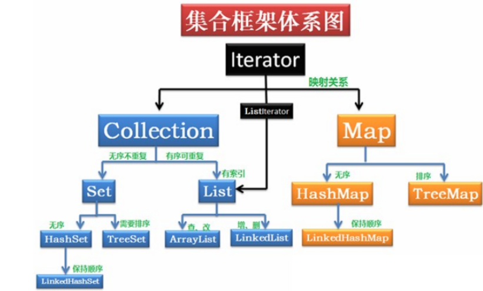
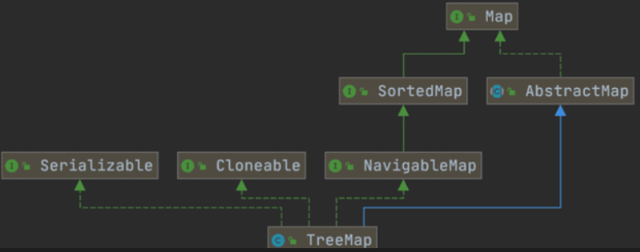
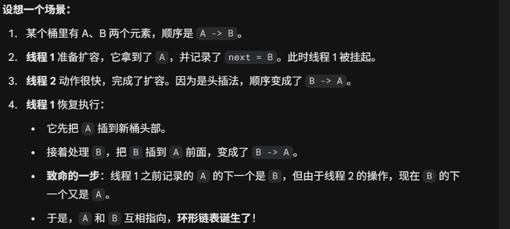
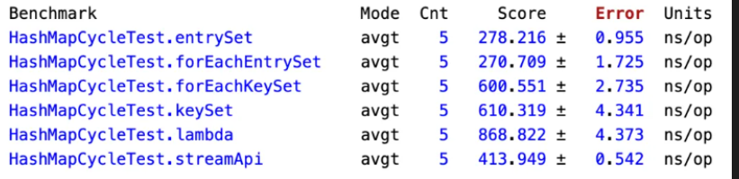

Java 集合
一、集合概述
1. 集合概述
Java 集合，也叫作容器，主要是由两大接口派生而来：一个是 Collection接口，主要用于存放单一元素；另一个是 Map 接口，主要用于存放键值对。对于Collection 接口，下面又有三个主要的子接口：List、Set 、 Queue。

2. List，Set，Queue，Map四者的区别
- List：存储的元素是有序的，可重复的，其子类ArrrayList实际上本质就是一个在内存连续的数组，我们可以通过下标在O(1)的时间获取元素，而LinkedList本质就是一个链表，它在需要频繁的增删操作有很大优势。
- Set：存储的元素是不可重复的
- Queue：按特定的排队规则来确定先后顺序，存储的元素是有序的、可重复的。
- Map：存储键值对数据，Key 是不可重复的，而 Value 则无所谓，在查询时主要通过 Key 去直接查到 Value。
3. 集合框架底层数据结构总结
3.1 List
ArrayList：Object[]数组。详细可以查看：ArrayList 源码分析。Vector：Object[]数组。LinkedList：双向链表(JDK1.6 之前为循环链表，JDK1.7 取消了循环)。详细可以查看：LinkedList 源码分析。
3.2 Set
HashSet(无序，唯一): 基于HashMap实现的，底层采用HashMap来保存元素。LinkedHashSet:LinkedHashSet是HashSet的子类，并且其内部是通过LinkedHashMap来实现的。TreeSet(有序，唯一): 红黑树(自平衡的排序二叉树)。
3.3 Queue
PriorityQueue:Object[]数组来实现小顶堆。详细可以查看：PriorityQueue 源码分析。DelayQueue:PriorityQueue。详细可以查看：DelayQueue 源码分析。ArrayDeque: 可扩容动态双向数组。
3.4 Map
HashMap：JDK1.8 之前HashMap由数组+链表组成的，数组是HashMap的主体，链表则是主要为了解决哈希冲突而存在的（“拉链法”解决冲突）。JDK1.8 以后在解决哈希冲突时有了较大的变化，当链表长度大于阈值（默认为 8）（将链表转换成红黑树前会判断，如果当前数组的长度小于 64，那么会选择先进行数组扩容（默认0.75），而不是转换为红黑树）时，将链表转化为红黑树，以减少搜索时间。详细可以查看：HashMap 源码分析。LinkedHashMap：LinkedHashMap通过在普通的HashMap基础上，额外维护了一条双向链表来实现有序。它继承了HashMap的位桶数组+链表/红黑树，但每个节点（Entry）都增加了before和after两个指针。默认维持的是插入顺序，还支持访问顺序，也就是每当一个元素被get（）或者put（）的时候，它就会被放到双向链表的尾部。Hashtable：数组+链表组成的，数组是Hashtable的主体，链表则是主要为了解决哈希冲突而存在的。TreeMap：红黑树（自平衡的排序二叉树）。
4. 如何选择集合
选择集合，要更具存储的元素以及需求来权衡，如果不是键值对，就在 collection 下选择，如果查询、修改频繁，我们就去选择 ArrayList，但如果增加、删除频繁，我们就选择 LinkedList，如果不需要排序且元素没有重复存储的需求，我们就去选择HashSet，但如果需要排序，且综合性能要求高，我们就用TreeSet。对于 Map 系列同理，如果我们不需要排序，则考虑 HashMap，需要排序则使用TreeMap，如果只需要维持插入顺序则选择 LinkedHashMap。
5. 为什么要使用集合
- 长度可变（动态扩容）： 数组在创建时必须指定长度，且不可改变；集合（如
ArrayList）支持动态扩容，能根据数据量自动调整空间，避免了空间浪费或溢出。 - 数据结构多样化： 集合框架直接封装了链表、栈、队列、哈希表、红黑树等复杂算法，开发者无需手写这些逻辑，做到了开箱即用。
- 功能丰富（高效率）： 提供了内置的排序、搜索、洗牌（shuffle）等工具类（如
Collections），极大提高了开发效率。 - 强类型安全： 配合泛型使用，可以在编译期检查数据类型，避免了频繁的类型强制转换带来的
ClassCastException。
二、List
1. Array 和 ArrayList
ArrayList 是动态数组，比起 Array更加灵活
- ArrayList会根据实际存储的元素动态地扩容或缩容，而 Array 被创建之后就不能改变它的长度了。
- ArrayList 允许你使用泛型来确保类型安全，Array 则不可以。
- ArrayList 中只能存储对象。对于基本类型数据，需要使用其对应的包装类（如 Integer、Double 等）。Array 可以直接存储基本类型数据，也可以存储对象。
- ArrayList 支持插入、删除、遍历等常见操作，并且提供了丰富的 API 操作方法，比如 add()、remove()等。Array 只是一个固定长度的数组，只能按照下标访问其中的元素，不具备动态添加、删除元素的能力。
- ArrayList创建时不需要指定大小，而Array创建时必须指定大小。
2. ArrayList 和 Vector 的区别
ArrayList是List的主要实现类，底层使用Object[]存储，适用于频繁的查找工作，线程不安全 。Vector是List的古老实现类，底层使用Object[]存储，线程安全。
3. ArrayList 可以添加 null 值吗？
ArrayList 中可以存储任何类型的对象，包括 null 值。不过，不建议向ArrayList 中添加 null 值， null 值无意义，会让代码难以维护比如忘记做判空处理就会导致空指针异常。
4. ArrayList 的插入和删除元素的时间复杂度
插入：O(n) 最坏情况：头插，需要移动 n 个元素，O(n) 最好情况，在尾部插入，不需要移动任何元素，O(1) 插入指定位置：需要把在该位置之后的所有元素都向后移动一个位置，由于可能在任何位置，所以加权计算后平均移动 n / 2 个元素。
删除同理：O(n)
查询：如果是根据下标查询，那就是O(1)
修改：和查询同理
5. LinkedList 插入和删除元素的时间复杂度
插入 | 删除：O(n) 如果是头插 | 尾插：直接进行指针的操作即可，O（1） 指定位置：需要找到指定位置，平时找 n / 2 次，所以是 O(n)
但由于LinkedList不需要移动元素，所以即使时间复杂度一样，但插入和删除的效率 LinkedList 还是高于 ArrayList 的。
6. LinkedList 为什么不能实现 RandomAccess 接口？
RandomAccess 是一个标记接口，用来表明实现该接口的类支持随机访问（即可以通过索引快速访问元素）。由于 LinkedList 底层数据结构是链表，内存地址不连续，只能通过指针来定位，不支持随机快速访问，所以不能实现 RandomAccess 接口。
7. ArrayList 和 LinkedList 的区别
- 底层数据结构不同：一个是数组，一个是双向链表
- 一个支持随机访问，一个不支持随机访问
- 数据在内存中是连续的，而链表不是连续的。
8. RandomAccess 接口⭐️
public interface RandomAccess {
}
查看源码我们发现实际上 RandomAccess 接口中什么都没有定义。所以，在我看来 RandomAccess 接口不过是一个标识罢了。标识什么？ 标识实现这个接口的类具有随机访问功能。
允许通用算法根据列表是“随机访问”还是“顺序访问”来调整行为，从而提供最佳性能。
在 binarySearch() 方法中，它要判断传入的 list 是否 RandomAccess 的实例，如果是，调用indexedBinarySearch()方法，如果不是，那么调用iteratorBinarySearch()方法
- 在 ArrayList 中，下标访问更快，因为它省去了迭代器对象的创建和方法调用开销，直接利用数组的内存偏移量寻址。
- 在 LinkedList 中，迭代器更快，因为它避免了每次查询都从头开始寻找节点的重复劳动。
9. Iterator 本质
迭代器的本质是对集合遍历逻辑的封装。它通过一种“黑盒”方式，让你无需关心底层是数组还是链表。
- 内部状态：迭代器内部维护了一个游标（cursor）。
- 执行逻辑：每次调用
next()，它都会根据底层结构的逻辑（数组则是下标自增，链表则是通过next指针寻找后继节点）来获取下一个元素。 - 设计模式：它是设计模式中“迭代器模式”的典型实现，目的是解耦容器的实现与遍历行为。
10. ArrayList 的扩容机制⭐⭐⭐
详见笔主的这篇文章: ArrayList 扩容机制分析。
首先是三种初始化方法 1. 默认构造方式：容量为10，实际上是一个空数组 2. 指定容量：本质就是创建了一个大小为 initCapacity 的 Object[] 3. 直接传一个 Collection 实现类，事实就是把这个集合转为 Object[] 数组
扩容实际就是当 size == elementData.length，就会调用 grow方法，grow底层调重载的 grow(int mincacity) 方法，如下：
可以分析：如果是默认初始化方式且是第一次添加原则，则本质就是将elementData扩容为一个长度为10的 Object 数组。如果不是第一次，则会调用 ArraysSupport.newLength 去获取新的数组大小，然后再去产生一个该大小的数组。
private Object[] grow(int minCapacity) {
int oldCapacity = elementData.length;
if (oldCapacity > 0 || elementData != DEFAULTCAPACITY_EMPTY_ELEMENTDATA) {
int newCapacity = ArraysSupport.newLength(oldCapacity,
minCapacity - oldCapacity, /* minimum growth */
oldCapacity >> 1 /* preferred growth */);
return elementData = Arrays.copyOf(elementData, newCapacity);
} else {
return elementData = new Object[Math.max(DEFAULT_CAPACITY, minCapacity)];
}
}
下面是获取新长度的方法源码：
首先，扩容大小是在：0.5倍的旧容量大小和 minGrowth 里选大的那个，一般都会是0.5倍的旧容量大小，也就是扩容1.5倍。
确定了扩容后的大小后，还得判断，如果当前大小已经大于了容器的最大容量，则调用hugeLength，否则直接返回扩容后的大小即可。
public static int newLength(int oldLength, int minGrowth, int prefGrowth) {
// preconditions not checked because of inlining
// assert oldLength >= 0 // assert minGrowth > 0
int prefLength = oldLength + Math.max(minGrowth, prefGrowth); // might overflow
if (0 < prefLength && prefLength <= SOFT_MAX_ARRAY_LENGTH) {
return prefLength;
} else {
// put code cold in a separate method
return hugeLength(oldLength, minGrowth);
}
}
而 hugeLength 方法则很简单，也就是如果 oldCapacity + minGrowth > 最大容量大小了，则直接抛异常，因为已经存不下了，否则直接返回最大容量。
总结： 扩容时机：如果是add方法，那么就是在 size == elementData.length 的时候扩容。而如果是 addAll 方法，则在当前元素个数 + 添加的集合的元素个数 > 当前容量的时候扩容 numNew > (elementData = this.elementData).length - (s = size)
扩容方法：grow(int minCapacity)，每次扩容后的大小是： $$ newCapacity = oldCapacity + max(0.5 * oldCapacity, minGrowth) $$ 如果 \(newCapacity < 最大容量\) ，则直接返回，否则调用 hugeLength（）方法。
hugeLength（）: oldCapacity + minGrowth 如果 oldCapacity + minGrowth < 最大容量，则直接返回，否则说明此时已经存不下了，抛出异常。
11. 集合中的 fail-fast 和 fail-safe 是什么？
fail-fast（快速失败）和 fail-safe（安全失败）是Java集合框架在处理并发修改问题时，两种截然不同的设计哲学和容错策略。
1. fail-fast
fail-fast 的思想即针对可能发生的异常进行提前表明故障并停止运行，通过尽早的发现和停止错误，降低故障系统级联的风险。fail-fast 机制通过维护一个变量 modCount，从而能够在遍历过程中提前的发现非法修改并立刻抛出异常，防止程序在错误的状态下继续运行。
原理：每次迭代之前，都会把当前的 modCount 赋给 expectedModCount，在迭代过程中，每次调用 `next()` 或 `remove()`，迭代器都会检查：`if (modCount != expectedModCount)`。如果不相同，就说明在迭代过程中有其他线程修改了当前集合，直接抛出异常：ConcurrentModificationException
2. fail-safe
核心思想：迭代时不是直接在原集合上遍历，而是基于原集合的快照（Snapshot），因此不受并发修改的影响。
实现原理：以 CopyOnWriteArrayList 为例，当发生写操作时，它会复制出一个新数组进行修改，修改完成后再将引用指向新数组。迭代器读取的是旧数组的快照。
代表容器：CopyOnWriteArrayList、ConcurrentHashMap（1.8后采用弱一致性迭代器）。
| 特性 | Fail-Fast | Fail-Safe |
|---|---|---|
| 异常抛出 | 抛出 ConcurrentModificationException |
不抛出异常 |
| 原理 | 检测 modCount 计数器 |
复制快照 (Copy-on-Write) |
| 性能 | 高（无需复制） | 较低（复制数组耗时耗空间） |
| 数据一致性 | 强一致性（虽抛异常但数据没乱） | 弱一致性（可能读到旧数据） |
三、Set
1. Comparable 和 Comparator 的区别
Comparable 接口和 Comparator 接口都是 Java 中用于排序的接口，
- Comparable 接口实际上是出自java.lang包 它有一个 compareTo(Object obj)方法用来排序
- Comparator接口实际上是出自 java.util 包它有一个compare(Object obj1, Object obj2)方法用来排序
Comparable 是“内部定义”，由类自身实现 compareTo 方法，确定默认的排序规则；而 Comparator 是“外部策略”，通过创建一个独立的比较器传入排序方法，无需修改原类代码即可实现多种灵活的排序需求。
2. 无序性和不可重复性的含义是什么
- 无序性 指存储顺序不等于添加顺序。 数据在底层并不是按照你
add()的先后顺序依次排列的。以HashSet为例，它根据元素的 Hash 值计算存储位置，所以你遍历出的顺序通常与你存入的顺序不一致。 - 不可重复性 指同一个集合中不能包含两个“相等”的元素。 这种相等是通过
equals()方法和hashCode()方法共同判定的。当你尝试存入重复元素时，新元素会覆盖旧元素或直接被拒绝存入，从而保证集合内元素的唯一性。
3. 比较 HashSet、LinkedHashSet 和 TreeSet 三者的异同
相同点： 三者均实现 Set 接口，具备元素唯一性，且都是线程不安全的。
不同点（核心差异点）：
- HashSet (最常用)：底层是 HashMap。它不保证任何顺序，性能最高，适用于只需要去重、不关心顺序的场景。
- LinkedHashSet (有序去重)：它是
HashSet的子类，底层是 HashMap + 双向链表。它通过链表维护了插入顺序，适用于需要去重但又希望按插入先后顺序遍历的场景。 -
TreeSet (排序去重)：底层是 红黑树 (TreeMap)。它能确保元素处于排序状态（自然排序或自定义
Comparator），适用于需要按大小、字母等特定规则排序的场景。 -
性能对比：
HashSet性能 >LinkedHashSet>TreeSet（因为树的维护成本高）。 - Null 值：
HashSet和LinkedHashSet允许一个null；而TreeSet如果使用自然排序，不允许存入null（会抛出NullPointerException，因为要进行比较）。
四、Qqeue
1. Queue 和 Deque 的区别
queue：单端队列，对头出，队尾入，遵守 FIFO 原则， deque：双端队列，队首队尾都允许插入元素以及出队。
2. ArrayDeque 和 LinkedList 的区别
ArrayDeque 和 LinkedList 都实现了 Deque 接口，两者都具有队列的功能，但两者有什么区别呢？
ArrayDeque是基于可变长的数组和双指针来实现，而LinkedList则通过链表来实现。ArrayDeque不支持存储NULL数据，但LinkedList支持。ArrayDeque是在 JDK1.6 才被引入的，而LinkedList早在 JDK1.2 时就已经存在。ArrayDeque插入时可能存在扩容过程, 不过均摊后的插入操作依然为 O(1)。虽然LinkedList不需要扩容，但是每次插入数据时均需要申请新的堆空间，均摊性能相比更慢。
从性能的角度上，选用 ArrayDeque 来实现队列要比 LinkedList 更好。此外，ArrayDeque 也可以用于实现栈。
3. PriorityQueue
PriorityQueue 是在 JDK1.5 中被引入的, 其与 Queue 的区别在于元素出队顺序是与优先级相关的，即总是优先级最高的元素先出队。
这里列举其相关的一些要点：
PriorityQueue利用了二叉堆的数据结构来实现的，底层使用可变长的数组来存储数据PriorityQueue通过堆元素的上浮和下沉，实现了在 O(logn) 的时间复杂度内插入元素和删除堆顶元素。PriorityQueue是非线程安全的，且不支持存储NULL和non-comparable的对象。PriorityQueue默认是小顶堆，但可以接收一个Comparator作为构造参数，从而来自定义元素优先级的先后。
4. BlockingQueue
BlockingQueue （阻塞队列）是一个接口，继承自 Queue。BlockingQueue阻塞的原因是其支持当队列没有元素时一直阻塞，直到有元素；还支持如果队列已满，一直等到队列可以放入新元素时再放入。
public interface BlockingQueue<E> extends Queue<E>
{
// ...
}
- 抛出异常：
add(e),remove()（队列满/空时报错） - 返回特殊值：
offer(e),poll()（队列满/空时返回 false/null） - 一直阻塞：
put(e),take()（这是最常用的阻塞核心方法） - 超时退出：
offer(e, time, unit),poll(time, unit)（等一会儿，不等了就走）
public static void main(String[] args) throws InterruptedException {
ArrayBlockingQueue<Integer> arrayBlockingQueue = new ArrayBlockingQueue<>(10);
// 消费者线程
Thread consumer = new Thread(() -> {
while (true){
try {
System.out.println(arrayBlockingQueue.take());
} catch (InterruptedException e) {
e.printStackTrace();
}
}
});
consumer.start();
for (int i = 0; i < 10; i++){
arrayBlockingQueue.put(i);
}
arrayBlockingQueue.put(11);
}
5. BlockingQueue 有哪些实现类

ArrayBlockingQueue：使用数组实现的有界阻塞队列。在创建时需要指定容量大小，并支持公平和非公平两种方式的锁访问机制。LinkedBlockingQueue：使用单向链表实现的可选有界阻塞队列。在创建时可以指定容量大小，如果不指定则默认为Integer.MAX_VALUE。和ArrayBlockingQueue不同的是， 它仅支持非公平的锁访问机制。PriorityBlockingQueue：支持优先级排序的无界阻塞队列。元素必须实现Comparable接口或者在构造函数中传入Comparator对象，并且不能插入 null 元素。SynchronousQueue：同步队列，是一种不存储元素的阻塞队列。每个插入操作都必须等待对应的删除操作，反之删除操作也必须等待插入操作。因此，SynchronousQueue通常用于线程之间的直接传递数据。DelayQueue：延迟队列，其中的元素只有到了其指定的延迟时间，才能够从队列中出队。
| 实现类 | 内部结构 | 是否有界 | 线程安全策略 | 特色场景 |
|---|---|---|---|---|
| ArrayBlockingQueue | 数组 | 强制有界 | 单锁（生产消费竞争同一把锁） | 内存占用低，适用于负载稳定的场景 |
| LinkedBlockingQueue | 链表 | 可选有界 | 双锁（生产消费分离，并发度更高） | 吞吐量高于 Array，ExecutorService 默认常用 |
| PriorityBlockingQueue | 二叉堆 | 无界 | 单锁 | 需要按优先级处理任务（如 VIP 优先） |
| DelayQueue | 堆 | 无界 | 单锁 | 缓存失效、定时任务调度 |
| SynchronousQueue | 无 | 零容量 | CAS / 信号量 | 线程池 CachedThreadPool 的核心实现 |
| LinkedTransferQueue | 链表 | 无界 | CAS | 高性能数据交换 |
6. BlockingQueue 有什么作用
简单来说，BlockingQueue 是为了解决生产者与消费者之间步调不一致**的问题。
如果没有 BlockingQueue，生产者可能会把内存撑爆，或者消费者在没东西处理时一直循环消耗 CPU。BlockingQueue 通过阻塞自动平衡了这两者的速度：
- 队列满了：生产者尝试放入元素时会被挂起（休息），直到消费者取走一个。
- 队列空了：消费者尝试取元素时会被挂起（休息），直到生产者放入一个。
A. 线程池（最经典的应用）
Java 的 ThreadPoolExecutor 核心就是 BlockingQueue。
- 当你提交的任务超过了核心线程数，任务就会被放入阻塞队列。
- 工作线程执行完任务后，会去队列里
take()任务。如果队列空了，工作线程就地阻塞，等待新任务到来，而不是白白消耗 CPU。
B. 解耦（Decoupling）
生产者不需要知道消费者的存在。生产者只管往队列里扔东西，消费者只管从队列里拿。哪怕消费者宕机了，数据也会先存在队列里（如果是持久化或足够大的话）。
C. 流量削峰
当瞬间涌入大量请求时，队列可以起到缓冲池的作用。请求先排队，系统按照自己的节奏慢慢处理，防止后端服务被瞬间的高并发冲垮。
7. Array
ArrayBlockingQueue 和 LinkedBlockingQueue 是 Java 并发包中常用的两种阻塞队列实现，它们都是线程安全的。不过，不过它们之间也存在下面这些区别：
- 底层实现：
ArrayBlockingQueue基于数组实现，而LinkedBlockingQueue基于链表实现。 - 是否有界：
ArrayBlockingQueue是有界队列，必须在创建时指定容量大小。LinkedBlockingQueue创建时可以不指定容量大小，默认是Integer.MAX_VALUE，也就是无界的。但也可以指定队列大小，从而成为有界的。 - 锁是否分离：
ArrayBlockingQueue中的锁是没有分离的，即生产和消费用的是同一个锁；LinkedBlockingQueue中的锁是分离的，即生产用的是putLock，消费是takeLock，这样可以防止生产者和消费者线程之间的锁争夺。 - 内存占用：
ArrayBlockingQueue需要提前分配数组内存，而LinkedBlockingQueue则是动态分配链表节点内存。这意味着，ArrayBlockingQueue在创建时就会占用一定的内存空间，且往往申请的内存比实际所用的内存更大，而LinkedBlockingQueue则是根据元素的增加而逐渐占用内存空间。
五、Map
1. HashMap 和 HashTable 的区别
- Hashmap 线程不安全，而 HashTable 线程安全
- Hashmap 支持 null 作为键，而 HashTable 不支持 null 作为键，也不支持 null 作为值
- 初始容量个每次扩容的大小不同：① 创建时如果不指定容量初始值，
Hashtable默认的初始大小为 11，之后每次扩充，容量变为原来的 2n+1。HashMap默认的初始化大小为 16。之后每次扩充，容量变为原来的 2 倍。② 创建时如果给定了容量初始值，那么Hashtable会直接使用你给定的大小，而HashMap会将其扩充为 2 的幂次方大小（HashMap中的tableSizeFor()方法保证，下面给出了源代码）。也就是说HashMap总是使用 2 的幂作为哈希表的大小,后面会介绍到为什么是 2 的幂次方。 - 底层数据有区别：数据 + 链表 + 红黑树
- 哈希函数的实现：
HashMap对哈希值进行了高位和低位的混合扰动处理以减少冲突，而Hashtable直接使用键的hashCode()值。
public HashMap(int initialCapacity, float loadFactor) {
if (initialCapacity < 0)
throw new IllegalArgumentException("Illegal initial capacity: " +
initialCapacity);
if (initialCapacity > MAXIMUM_CAPACITY)
initialCapacity = MAXIMUM_CAPACITY;
if (loadFactor <= 0 || Float.isNaN(loadFactor))
throw new IllegalArgumentException("Illegal load factor: " +
loadFactor);
this.loadFactor = loadFactor;
this.threshold = tableSizeFor(initialCapacity);
}
public HashMap(int initialCapacity) {
this(initialCapacity, DEFAULT_LOAD_FACTOR);
}
这段代码是 HashMap 源码中非常经典的一个位运算算法。它的核心作用是：给定任意一个正整数 cap，寻找大于或等于 cap 的最小的 2 的幂次（Power of Two）。
/**
* Returns a power of two size for the given target capacity.
*/
static final int tableSizeFor(int cap) {
// 1. 减1：处理 cap 已经是 2 的幂的情况
int n = cap - 1;
// 2. 下面这些操作是将最高位 1 之后的低位全部涂黑（变成 1）
n |= n >>> 1; // 保证有 2 个连续的 1
n |= n >>> 2; // 保证有 4 个连续的 1
n |= n >>> 4; // 保证有 8 个连续的 1
n |= n >>> 8; // 保证有 16 个连续的 1
n |= n >>> 16; // 保证有 32 个连续的 1
// 3. 最后 n 变成了一个形如 00...0111...1 的数
// 4. 返回时加 1，它就变成了 100...000，即最小的 2 的幂
return (n < 0) ? 1 : (n >= MAXIMUM_CAPACITY) ? MAXIMUM_CAPACITY : n + 1;
}
2. 为什么 haspMap 底层数据必须是 \(2^n\) 呢⭐️⭐️⭐️
HashMap 的底层数组长度必须是 \(2^n\)。这样在计算下标时，可以使用位运算 (n - 1) & hash 来代替取模运算 %，从而极大地提高性能。
在计算机底层，取模运算（%） 是一个非常昂贵的操作，它涉及到除法。而按位与运算（&） 只需要直接操作二进制位，速度比取模快了好几倍。
当你用一个 hash 值去 & (n - 1) 时，由于 n-1 的高位全是 0，低位全是 1，这个操作的效果就是：只保留 hash 值的低位，抹掉高位。 这和取模的结果在数学上是完全一致的。
public static void main(String[] args) {
System.out.println(90 % 16);
System.out.println(90 & (16 - 1));
}
- 位运算效率更高：位运算(&)比取余运算(%)更高效。当长度为 2 的幂次方时，
hash % length等价于hash & (length - 1)。 - 可以更好地保证哈希值的均匀分布：扩容之后，在旧数组元素 hash 值比较均匀的情况下，新数组元素也会被分配的比较均匀，最好的情况是会有一半在新数组的前半部分，一半在新数组后半部分。
- 扩容机制变得简单和高效：扩容后只需检查哈希值高位的变化来决定元素的新位置，要么位置不变（高位为 0），要么就是移动到新位置（高位为 1，原索引位置+原容量）。
补充：为什么1.8 扩容时不需要重新计算 Hash？⭐️
因为 hashmap 的扩容实际就是容量加倍，而又因为容量是 \(2^n\)， 因此新的桶下表只看原来的hash值在新增的那一个高位是不是1，不是1，则位置不变，是1，则新下表为原来的位置 + 扩容前的数组长度）
n = 16 扩容后 n = 32
那么，新下标就是看hash值的第五位是1还是0，是1，则新下标就是 16 + 旧下表，是0，则下标不变。
3. HashMap 和 HashSet 的区别
如果你看过 HashSet 源码的话就应该知道：HashSet 底层就是基于 HashMap 实现的。（HashSet 的源码非常非常少，因为除了 clone()、writeObject()、readObject()是 HashSet 自己不得不实现之外，其他方法都是直接调用 HashMap 中的方法。
4. HashMap 和 TreeMap 的区别
TreeMap 和HashMap 都继承自AbstractMap ，但是需要注意的是TreeMap它还实现了NavigableMap接口和SortedMap 接口。

| 特性 | HashMap | TreeMap |
|---|---|---|
| 底层数据结构 | 哈希表（数组 + 链表 + 红黑树） | 红黑树（自平衡二叉搜索树） |
| 元素顺序 | 无序（插入顺序和遍历顺序不一致） | 有序（默认按 Key 的升序排列） |
| 性能 (平均时间复杂度) | 插入、查询、删除均为 \(O(1)\) | 插入、查询、删除均为 \(O(\log n)\) |
| 接口实现 | 继承 AbstractMap |
继承 AbstractMap，多实现了 NavigableMap 和 SortedMap |
| Null 值支持 | 允许 1 个 null 键，多个 null 值 | 不允许 null 键（因为要比较大小），允许 null 值 |
“HashMap 底层基于哈希表实现，主打高性能，其插入和查询的平均复杂度为 \(O(1)\)，但它是无序的；而 TreeMap 底层基于红黑树实现，虽然 \(O(\log n)\) 的性能略逊一筹，但它实现了 NavigableMap 接口，能够根据键（Key）的自然顺序或自定义比较器进行排序，并支持高效的范围查找和边界搜索。”
5. TreeMap 的优势⭐️⭐️⭐️
- 定向搜索:
ceilingEntry(),floorEntry(),higherEntry()和lowerEntry()等方法可以用于定位大于等于、小于等于、严格大于、严格小于给定键的最接近的键值对。 - 子集操作:
subMap(),headMap()和tailMap()方法可以高效地创建原集合的子集视图，而无需复制整个集合。 - 逆序视图:
descendingMap()方法返回一个逆序的NavigableMap视图，使得可以反向迭代整个TreeMap。 - 边界操作:
firstEntry(),lastEntry(),pollFirstEntry()和pollLastEntry()等方法可以方便地访问和移除元素。
6. HashSet 如何检查重复
“HashSet 通过计算对象的 hashCode 定位数组下标。如果位置冲突，先比对 hashCode 是否一致，若一致再调用 equals() 做最终确认。这种双重检查机制极大地提高了查找效率，将检查重复的时间复杂度从 \(O(n)\) 降到了平均 \(O(1)\)。”
7. HashSet 如果元素存在，会覆盖吗？
“对于 HashSet 来说，如果添加重复元素，add 方法会返回 false，且底层的 Key（即对象本身）不会被覆盖，依然保留第一次添加时的那个对象；虽然底层 HashMap 会覆盖对应的 Value，但由于 HashSet 的所有 Value 都是同一个静态常量 PRESENT，所以覆盖了也没有实质影响。”
8. HashMap 的底层实现⭐️
JDK1.8 之前 HashMap 底层是 数组和链表 结合在一起使用也就是 链表散列。HashMap 通过 key 的 hashcode 经过扰动函数处理过后得到 hash 值，然后通过 (n - 1) & hash 判断当前元素存放的位置（这里的 n 指的是数组的长度），如果当前位置存在元素的话，就判断该元素与要存入的元素的 hash 值以及 key 是否相同，如果相同的话，直接覆盖，不相同就通过拉链法解决冲突。
8.1 put 方法的底层原理⭐️
- 算 Hash 找下标。
- 没冲突 直接塞。
- 有冲突 看 Key。
- 是树 走树逻辑，是链表 遍历找位置。
- 链表过长 转红黑树。
- Key 重复 换 Value。
- 塞完 检查要不要扩容。
final V putVal(int hash, K key, V value, boolean onlyIfAbsent,
boolean evict) {
Node<K,V>[] tab; Node<K,V> p; int n, i;
if ((tab = table) == null || (n = tab.length) == 0)
n = (tab = resize()).length;
if ((p = tab[i = (n - 1) & hash]) == null)
tab[i] = newNode(hash, key, value, null);
else {
Node<K,V> e; K k;
if (p.hash == hash &&
((k = p.key) == key || (key != null && key.equals(k))))
e = p;
else if (p instanceof TreeNode)
e = ((TreeNode<K,V>)p).putTreeVal(this, tab, hash, key, value);
else {
for (int binCount = 0; ; ++binCount) {
if ((e = p.next) == null) {
p.next = newNode(hash, key, value, null);
if (binCount >= TREEIFY_THRESHOLD - 1) // -1 for 1st
treeifyBin(tab, hash);
break;
}
if (e.hash == hash &&
((k = e.key) == key || (key != null && key.equals(k))))
break;
p = e;
}
}
if (e != null) { // existing mapping for key
V oldValue = e.value;
if (!onlyIfAbsent || oldValue == null)
e.value = value;
afterNodeAccess(e);
return oldValue;
}
}
++modCount;
if (++size > threshold)
resize();
afterNodeInsertion(evict);
return null;
}
8.2 hash 源码⭐️
jkd 1.8 之后 的 hash方法：“扰动函数”的作用就是：把高 16 位的特征，“混合”到低 16 位中。因为：HashMap 的初始容量通常很小（比如 16），那么 n - 1 就是 15（二进制：0000...1111）。当进行 & 运算时，只有哈希值的最后 4 位参与了运算。问题来了：如果有很多 Key 的 hashCode 虽然不同，但如果它们仅仅是高位不同，低位全部相同，那么它们计算出的数组下标就会完全一样，导致严重的哈希冲突。
static final int hash(Object key) {
int h;
// key.hashCode()：返回散列值也就是hashcode
// ^：按位异或
// >>>:无符号右移，忽略符号位，空位都以0补齐
return (key == null) ? 0 : (h = key.hashCode()) ^ (h >>> 16);
}
“JDK 1.8 的 hash 方法通过 (h ^ h >>> 16) 将哈希值的高 16 位与低 16 位进行异或运算。这样做是为了在数组长度较小时，让高位信息也能参与到下标寻址的运算中。这大大降低了哈希碰撞的概率，使得数据在散列表中分布得更加均匀，从而维持了 HashMap 接近 \(O(1)\) 的查找性能。”
8.3 底层数据结构
JDK 1.8 之前：就是一个简单的 数组+ 链表的结构。但是，如果哈希冲突严重，链表可能会比较长，极端情况下查询效率会退化为 O(n)
JDK 1.8 之后，为了解决这个问题，底层数据结构变为了数组 + 链表 + 红黑树的结构。相比于之前的版本， JDK1.8 之后在解决哈希冲突时有了较大的变化，当链表长度大于阈值（默认为 8）（将链表转换成红黑树前会判断，如果当前数组的长度小于 64，那么会选择先进行数组扩容，而不是转换为红黑树）时，将链表转化为红黑树。
这样做的目的是减少搜索时间：链表的查询效率为 O(n)（n 是链表的长度），红黑树是一种自平衡二叉搜索树，其查询效率为 O(log n)。当链表较短时，O(n) 和 O(log n) 的性能差异不明显。但当链表变长时，查询性能会显著下降。
8.4 扩容⭐️
达到 capacity * 0.75 factor 进行扩容，每次两倍。
9. 为什么 HashMap 优先扩容而非直接转为红黑树
因为数组扩容才是更加根本的减少哈希冲突的方法，因此，当数组容量不算大时，会优先选择扩容，在java中，只有长度 > 64，才会将链表转为红黑树。
另一方面，过早引入红黑树反而会降低哈希表的效率，因为红黑树的结构比较复杂，常数比较大。
10. 为什么选择阈值 8 和 64
- 泊松分布表明，链表长度达到 8 的概率极低（小于千万分之一）。在绝大多数情况下，链表长度都不会超过 8。阈值设置为 8，可以保证性能和空间效率的平衡。
- 数组长度阈值 64 同样是经过实践验证的经验值。在小数组中扩容成本低，优先扩容可以避免过早引入红黑树。数组大小达到 64 时，冲突概率较高，此时红黑树的性能优势开始显现。
用极小的概率换取极高的搜索性能。：
空间成本：红黑树的节点（TreeNode）占用的空间大约是普通链表节点（Node）的 2 倍。如果一上来就用树，会浪费大量内存。
时间成本：当 \(n=8\) 时，\(\log_2(8) = 3\)。虽然 3 比 8 小，但考虑到红黑树旋转保持平衡的开销，在 \(n\) 比较小时，两者的查找速度差异并不大。
泊松分布（Poisson Distribution）： 根据源码注释中的计算，在哈希值分布均匀的情况下，桶中元素达到 8 个的概率只有 0.00000006。
11. HashMap 多线程操作导致死循环问题
JDK1.7 及之前版本的 HashMap 在多线程环境下扩容操作可能存在死循环问题，这是由于当一个桶位中有多个元素需要进行扩容时，多个线程同时对链表进行操作，头插法可能会导致链表中的节点指向错误的位置，从而形成一个环形链表，进而使得查询元素的操作陷入死循环无法结束。

为了解决这个问题，JDK1.8 版本的 HashMap 采用了尾插法而不是头插法来避免链表倒置，使得插入的节点永远都是放在链表的末尾，避免了链表中的环形结构。但是还是不建议在多线程下使用 HashMap，因为多线程下使用 HashMap 还是会存在数据覆盖的问题。并发环境下，推荐使用 ConcurrentHashMap 。
- 保持顺序：扩容搬迁时，原链表里的
A -> B，搬到新数组后依然保持A -> B的相对顺序。 - 物理隔离：它不是一个一个挪，而是先在原位置分好“高位链表”和“低位链表”，然后整体挂载到新的桶位上。既然顺序没乱，也就失去了形成“环”的基础条件。
总结：
“JDK 1.7 的死循环根源在于多线程竞争下的头插法，导致链表节点在搬迁时产生了环。1.8 虽然通过尾插法和高低位迁移解决了环的问题，但由于 put 等操作没有任何同步锁保护，依然存在多线程并发修改导致的数据覆盖风险。因此，在并发环境下，我们必须使用 ConcurrentHashMap 或者 Collections.synchronizedMap()。”
12 HashMap 为什么线程不安全⭐️
- 在 jdk 1.7 之前，由于是头插法，所以在并发扩容是可能会导致链表成环
- 并发新增元素会导致数据丢失。
13. HashMap 的常见遍历方式⭐️
-
迭代器（Iterator）方式遍历
// 1. 迭代器遍历：entry set Iterator<Map.Entry<String, String> > iterator = map.entrySet().iterator(); while (iterator.hasNext()) { Map.Entry<String, String> entry = iterator.next(); System.out.println(entry.getKey() + ":" + entry.getValue()); } // 2. 迭代器遍历：key set Iterator<String> iterator1 = map.keySet().iterator(); while (iterator1.hasNext()) { String key = iterator1.next(); System.out.println(key + ":" + map.get(key)); } -
For Each 方式遍历
// 1. entry for(var entry : map.entrySet()){ System.out.println(entry.getKey() + ":" + entry.getValue()); } // 2. key for(var key : map.keySet()){ System.out.println(key + ":" + map.get(key)); } -
Lambda 表达式遍历（JDK 1.8+）
map.forEach((k, v) -> System.out.println(k + ":" + v)); -
Streams API 遍历（JDK 1.8+）
// 串行流 map.entrySet().stream().forEach(entry -> { System.out.println(entry.getKey() + entry.getValue()); }); // 并行流 map.entrySet().parallelStream().forEach(entry -> { System.out.println(entry.getKey() + entry.getValue()); });

其中 Units 为 ns/op 意思是执行完成时间（单位为纳秒），而 Score 列为平均执行时间， ± 符号表示误差。从以上结果可以看出，两个 entrySet 的性能相近，并且执行速度最快，接下来是 stream ，然后是两个 keySet，性能最差的是 KeySet 。
14. CoucurrentHashMap
| 特性 | JDK 1.7 | JDK 1.8 |
|---|---|---|
| 锁的实现 | Segment (继承 ReentrantLock) |
node + CAS + synchronized |
| 锁的粒度 | 分段锁（默认 16 个 Segment） | 节点锁（锁住每个桶的头节点） |
| 数据结构 | 数组 + 链表 | 数组 + 链表 + 红黑树 |
| 查询性能 | 链表 \(O(n)\) | 红黑树 \(O(\log n)\) |
“ConcurrentHashMap 在 1.7 采用 Segment 分段锁来实现并发，并发度受限于分段数；而在 1.8 则抛弃了分段锁，改用 CAS + 数组头节点上的 synchronized，配合红黑树，实现了更细粒度的锁定和更高的并发性能，同时支持多线程协助扩容，是目前 Java 并发环境下最高效的散列表实现。”
分段锁： 将数据分成一段一段的（Segment），每一段都配一把锁。当一个线程占用其中一把锁时，这一段内的数据都被锁住，但其他段的数据依然可以被其他线程访问。
节点锁：抛弃段的概念，直接给数组里的每一个桶（Bucket）的头节点加锁。
15. JDK 1.7 和 JDK 1.8 的 ConcurrentHashMap 实现有什么不同？
- 线程安全实现方式：JDK 1.7 采用
Segment分段锁来保证安全，Segment是继承自ReentrantLock。JDK1.8 放弃了Segment分段锁的设计，采用Node + CAS + synchronized保证线程安全，锁粒度更细，synchronized只锁定当前链表或红黑二叉树的首节点。 - Hash 碰撞解决方法 : JDK 1.7 采用拉链法，JDK1.8 采用拉链法结合红黑树（链表长度超过一定阈值时，将链表转换为红黑树）。
- 并发度：JDK 1.7 最大并发度是 Segment 的个数，默认是 16。JDK 1.8 最大并发度是 Node 数组的大小，并发度更大。
16. node + cas + synchronized
“在 JDK 1.8 中，ConcurrentHashMap 结合了这三者的优势：Node 的 volatile 字段保证了多线程间的内存可见性，使读取操作无需加锁；CAS 实现了在特定位置为空时的无锁原子化插入，极大地提升了并发性能；而 synchronized 则提供了细粒度的互斥保护，仅在发生哈希冲突时锁定单个桶的头节点
17. ConcurrentHashMap 为什么 key 和 value 不能为 null？
“ConcurrentHashMap 不允许 Key 和 Value 为 null，主要是为了消除在并发环境下的二义性。如果允许 null 值，当 get(key) 返回 null 时，我们无法在不加锁的情况下通过 containsKey 确认这个 null 的真实含义，因为在两次操作之间，其他线程可能已经修改了 Map。
18. Colletions 工具类
排序：
// 排序
void reverse(List list)//反转
void shuffle(List list)//随机排序
void sort(List list)//按自然排序的升序排序
void sort(List list, Comparator c)//定制排序，由Comparator控制排序逻辑
void swap(List list, int i , int j)//交换两个索引位置的元素
void rotate(List list, int distance)//旋转。当distance为正数时，将list后distance个元素整体移到前面。当distance为负数时，将 list的前distance个元素整体移到后面
查找 | 替换
int binarySearch(List list, Object key)//对List进行二分查找，返回索引，注意List必须是有序的
int max(Collection coll)//根据元素的自然顺序，返回最大的元素。 类比int min(Collection coll)
int max(Collection coll, Comparator c)//根据定制排序，返回最大元素，排序规则由Comparatator类控制。类比int min(Collection coll, Comparator c)
void fill(List list, Object obj)//用指定的元素代替指定list中的所有元素
int frequency(Collection c, Object o)//统计元素出现次数
int indexOfSubList(List list, List target)//统计target在list中第一次出现的索引，找不到则返回-1，类比int lastIndexOfSubList(List source, list target)
boolean replaceAll(List list, Object oldVal, Object newVal)//用新元素替换旧元素